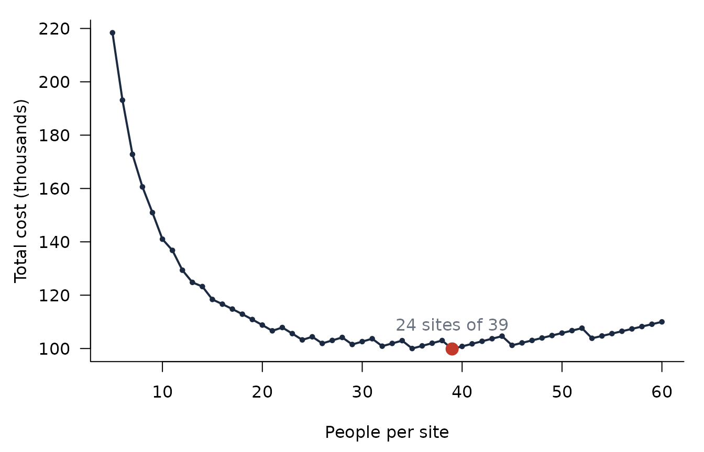

A design that meets its statistical target is only useful if it can
be paid for. estimate_cost() puts a price on a design, and
because it takes its inputs straight from the design functions, it can
be used to compare designs that are statistically equivalent but cost
very different amounts.
All costs in this article are illustrative, in an unnamed currency unit. Replace them with figures from your own budget.
The cost model
estimate_cost() splits a study’s cost into two
parts:
- a variable cost, paid for every person enrolled: sample collection, laboratory testing, consumables and data management;
- a site cost, paid once for every site: a fixed cost (training, equipment, administration) plus a transport cost.
With samples only:
estimate_cost(n = 400, cost_per_sample = 40)
#> $total_cost
#> [1] 16000
#>
#> $variable_cost
#> [1] 16000
#>
#> $site_cost
#> [1] 0
#>
#> $budget_remaining
#> NULLWith sites, give the number of sites and the cost per site:
estimate_cost(n = 400, cost_per_sample = 40, n_sites = 20,
fixed_cost_per_site = 2000, transport_cost_per_site = 600)
#> $total_cost
#> [1] 68000
#>
#> $variable_cost
#> [1] 16000
#>
#> $site_cost
#> [1] 52000
#>
#> $budget_remaining
#> NULLSite costs need not be the same everywhere. Remote sites usually cost
more to reach, so either per-site cost can be given as one value per
site. Adding a budget reports how much would be left over
(negative if the study is over budget):
transport <- c(200, 200, 300, 400, 600, 800, 1200, 1500)
estimate_cost(n = 240, cost_per_sample = 40, n_sites = 8,
fixed_cost_per_site = 2000, transport_cost_per_site = transport,
budget = 35000)
#> $total_cost
#> [1] 30800
#>
#> $variable_cost
#> [1] 9600
#>
#> $site_cost
#> [1] 21200
#>
#> $budget_remaining
#> [1] 4200Comparing designs
The main use of estimate_cost() is choosing between
designs. Suppose we want to estimate a prevalence of around 30% to
within ±5 percentage points, with an ICC of 0.05.
design_precision() can meet that target with many
combinations of sites and people per site. Few people per site needs
many sites; many people per site needs fewer sites, but a larger design
effect means more people in total.
Work out the design for each number of people per site from 5 to 60, and cost each one:
cost_per_sample <- 40
site_cost <- 2000 # fixed cost per site
transport_cost <- 600 # transport cost per site
per_site <- 5:60
designs <- do.call(rbind, lapply(per_site, function(s) {
des <- design_precision(prevalence = 0.3, moe = 0.05, n_per_site = s, icc = 0.05)
cost <- estimate_cost(n = des$n, cost_per_sample = cost_per_sample,
n_sites = des$n_sites,
fixed_cost_per_site = site_cost,
transport_cost_per_site = transport_cost)
data.frame(n_per_site = s, n_sites = des$n_sites, n = des$n,
deff = des$deff, total_cost = cost$total_cost)
}))
head(designs)
#> n_per_site n_sites n deff total_cost
#> 1 5 78 390 1.20 218400
#> 2 6 68 408 1.25 193120
#> 3 7 60 420 1.30 172800
#> 4 8 55 440 1.35 160600
#> 5 9 51 459 1.40 150960
#> 6 10 47 470 1.45 141000
best <- designs[which.min(designs$total_cost), ]
best
#> n_per_site n_sites n deff total_cost
#> 35 39 24 936 2.9 99840
par(mar = c(4.5, 4.5, 1, 1), las = 1, bty = "l")
plot(designs$n_per_site, designs$total_cost / 1000, type = "l",
col = "#1B2A41", lwd = 2,
xlab = "People per site", ylab = "Total cost (thousands)")
points(designs$n_per_site, designs$total_cost / 1000,
pch = 19, cex = 0.6, col = "#1B2A41")
points(best$n_per_site, best$total_cost / 1000, pch = 19, cex = 1.6, col = "#C0392B")
text(best$n_per_site, best$total_cost / 1000,
sprintf("%d sites of %d", best$n_sites, best$n_per_site),
pos = 3, offset = 0.9, col = "#6B7280")
Every point on this curve gives the same precision. On the left, sampling 5 people per site needs 78 sites, and the site costs dominate. Moving right, each extra person per site saves sites, and the cost falls quickly. Past a point the saving stops: the design effect keeps growing, so the extra people needed to make up for it cost more than the sites they save. The cheapest design here is 24 sites of 39 people (936 in all, design effect 2.9), costing 99,840.
The curve is jagged because the number of sites is a whole number: a design that needs 23.1 sites pays for 24. Near the bottom the curve is also quite flat, so designs a little either side of the cheapest cost much the same. That leaves room to choose on practical grounds, such as how many people a field team can sample at a site in a day.
The shape depends on the ratio of site cost to sample cost. When sites are expensive relative to samples, the cheapest design has more people per site; when samples are expensive (for example, with whole-genome sequencing), it has fewer. A higher ICC also pushes towards fewer people per site, since each additional person at a site is worth less.
Costing a comparison of two groups
The same works for any design function. For
design_difference(), note that n is already
the total across both groups, but n_sites is given per
group, so the number of sites to cost is sum(n_sites):
dd <- design_difference(prevalence1 = 0.10, prevalence2 = 0.20,
n_per_site = 20, icc = 0.05)
dd$n
#> [1] 800
dd$n_sites
#> [1] 20 20
estimate_cost(n = dd$n, cost_per_sample = cost_per_sample,
n_sites = sum(dd$n_sites),
fixed_cost_per_site = site_cost,
transport_cost_per_site = transport_cost)
#> $total_cost
#> [1] 136000
#>
#> $variable_cost
#> [1] 32000
#>
#> $site_cost
#> [1] 104000
#>
#> $budget_remaining
#> NULLIf the two regions have different costs (one is much further away,
say), call estimate_cost() once per region and add the
totals.
Fitting a budget
To find which designs fit a fixed budget, keep the rows of the table above that come in under it. With a budget of 105,000:
budget <- 105000
fits <- designs[designs$total_cost <= budget, ]
range(fits$n_per_site)
#> [1] 24 5428 of the 56 designs meet the precision target within budget, with
between 24 and 54 people per site. Because the curve is jagged, not
every value in that range fits; check the table rather than assuming it
does. If no row fits, the target itself has to change: a wider margin of
error, or a cheaper laboratory method. For the chosen design,
budget shows what is left for contingencies:
estimate_cost(n = best$n, cost_per_sample = cost_per_sample,
n_sites = best$n_sites,
fixed_cost_per_site = site_cost,
transport_cost_per_site = transport_cost,
budget = budget)$budget_remaining
#> [1] 5160